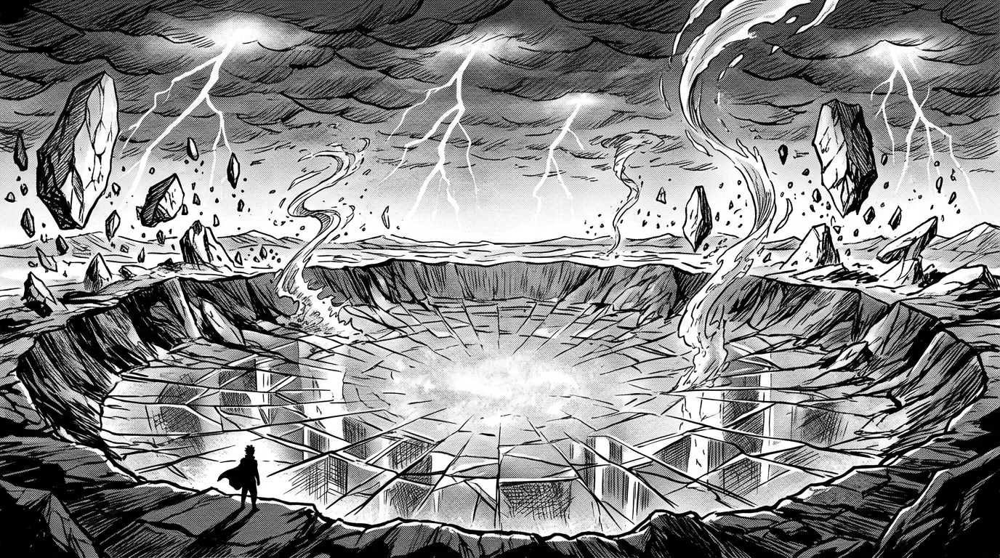

Место, куда не ходят

В самом центре Ауракса, там, где когда-то стояли горы, — дыра. Не яма. Не провал. Дыра в самом понятии «нормальности».
Мёртвая Зона — гигантский кратер размером с целую страну. Его стены — оплавленное стекло, переливающееся всеми цветами спектра, когда на него падает свет. Но свет падает редко: над кратером бушуют вечные магические штормы — не обычные грозы, а хаотические выбросы стихийной энергии. Молнии бьют синим, красным, зелёным. Дождь то кипит, то замерзает, не долетев до земли. Ветер меняет направление каждые несколько секунд.
Гравитация в Мёртвой Зоне искажена. Камни парят над землёй, вода спиралью поднимается вверх, тени падают в противоположную сторону от источника света. Чем ближе к центру кратера — тем сильнее искажения. На периферии они раздражают. В середине — убивают.
За столетия ни одна экспедиция не добралась до центра Мёртвой Зоны и вернулась обратно. Тектронские дроны, посланные на разведку, теряли связь через шесть километров. Маги Гравитации Аурумгарда, попытавшиеся пролететь над кратером, обнаружили, что их кольца начинают работать наоборот: вместо левитации — сокрушительное притяжение к земле.
Что в центре? Никто не знает наверняка. Самые далёкие наблюдатели сообщают о слабом свечении — тёплом, пульсирующем, как сердцебиение. Одни считают это остаточной энергией древнего катаклизма. Другие — аномалией гравитации, преломляющей свет звёзд. Третьи — и это самая тихая, самая упрямая версия — утверждают, что свет идёт из-под земли. Что там, в глубине, лежит нечто, что пережило Раскол.
Нечто, что ждёт.
Каждая фракция претендует на Мёртвую Зону, но ни одна не может её занять. Она остаётся единственным по-настоящему нейтральным местом на Аураксе — не потому, что стороны договорились, а потому что Зона не пускает никого.
Пока не пускает.